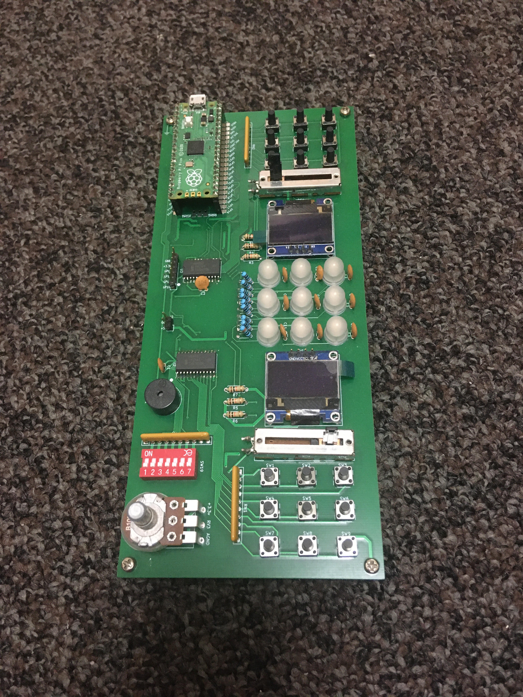
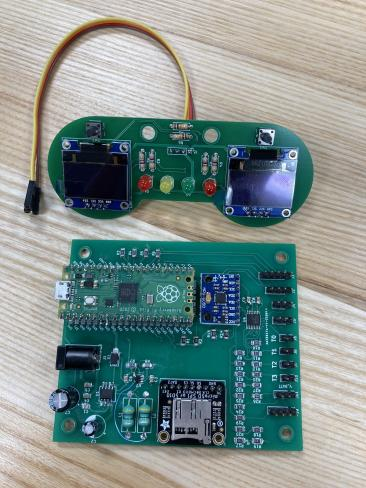

This is a project I did over summer 2020 for a BU CS200 class taugh by XRTerra, with 2 classmates. We used the unity game engine to make the simulator, and most of the assets and all the scripting are done from scratch. I made all of the assets as well as some of the scripting and physics.You can download the latest build as well as source code on my github.
Intel MCS-85 System Development Kit restoration
I am attempting to restore and modify an intel systems development kit from the collection of the Rhode Island Computer Museum. The MCS-85 is a barebones kit sold by intel in the late 70s for hardware manufacturers to design systems around the 8085a processor. The kit provides 256 bytes of ram, a monitor loaded into ROM, and a rudimentary I/O system consisting of a 24-key keyboard and single-line 6-digit display. While this is theoretically enough to program the system, the kit is intended for the user to supply additional hardware to fit the needs of whatever they are designing. So far I have succeeded in adding a connection for a teleprinter terminal as well as an additional 256 bytes of ram. A more detailed look at the kit and restoration is available on the RICM website. Thanks to the other volunteers at the museum for allowing me to use the collection and providing documentation and other help.
RICM PicoBoard

Over the summer of 2021, Dan Berman, curator at the Rhode Island Computer Museum, asked me to design a new kit for use in the Museum's "learn electronics" workshops for elementary-school children. After thinking about what hardware might be interesting for the project, I settled on a Raspberry Pi Pico, because of its low cost and the ability to program it directly in Python. Mike Thompson and I then designed and laid out a circuit board for the hardware I had selected, and we were able to construct several of the kits. The latest iteration costs only $20 for all components and the PCB, allowing us to provide the kit for workshops. Thanks to Dan Berman and RICM for funding the project and Mike Thompson for his help in laying out the board.
F24 Greenpower Telemetry Board

In 2022, RICM began sponsoring several Rhode Island high schools in establishing a Greenpower F24 electric gokart racing league. The primary purpose of the project is to give the students hands-on practice with fabrication, electronics, and mechanical engineering. The Greenpower foundation used to provide a telemetry kit which measured important statsitics about the car, but as it was very expensive and not available in the US, the museum asked me to design a replacement. Using the original kit as a guide for requirements, I selected parts, designed and ordered a board, and assembled a prototype kit. The kit measures car telemetry statistics like battery level, motor current consumption, motor temperature, and acceleration. We also added additional hardware to display statistics to the driver, and to log data to an SD card for the students to use in redesigning the car.